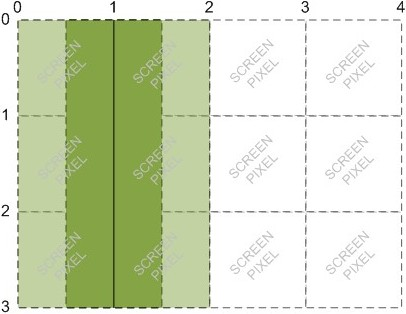

Canvas lines are drawn with the center of the line at the start and end points. This makes sense when you are trying to center things like the 20px wide line from (50, 10) to (50, 90) below. But it is confusing when you want to align something to an edge, like the line of the same width from (0, 10) to (0, 90) below. This line looks 10px wide becuase half of the line is off the canvas.
ctx.lineWidth = 20;
ctx.beginPath();
ctx.moveTo(0, 10);
ctx.lineTo(0, 90);
ctx.moveTo(50, 10);
ctx.lineTo(50, 90);
ctx.stroke();
ctx.closePath();
It's also very confusing when drawing a line 1px wide:
“For example, if you try to draw a line from (1, 0) to (1, 3), the browser will draw a line covering 0.5 screen pixels on either side of x=1. The screen can’t display half a pixel, so it expands the line to cover a total of two pixels:”
